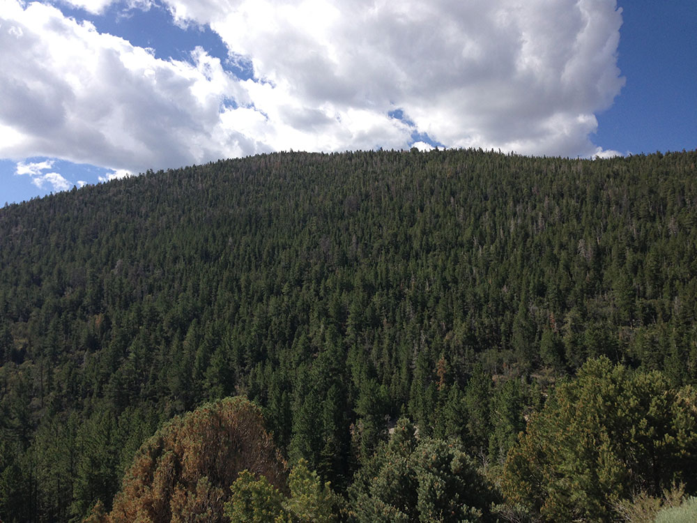
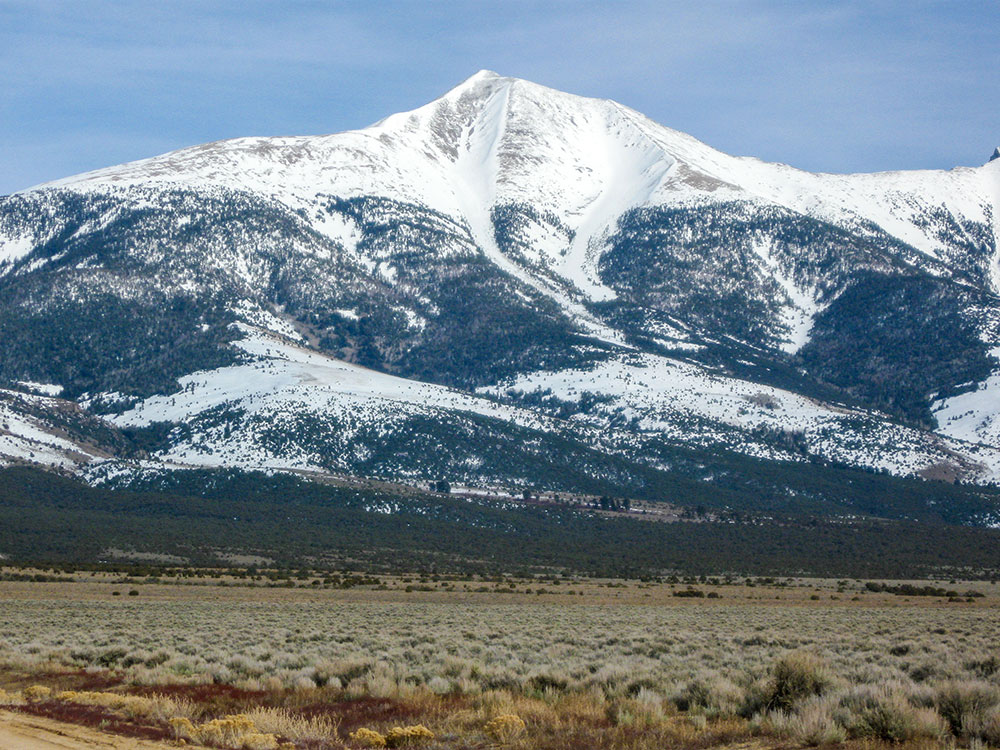
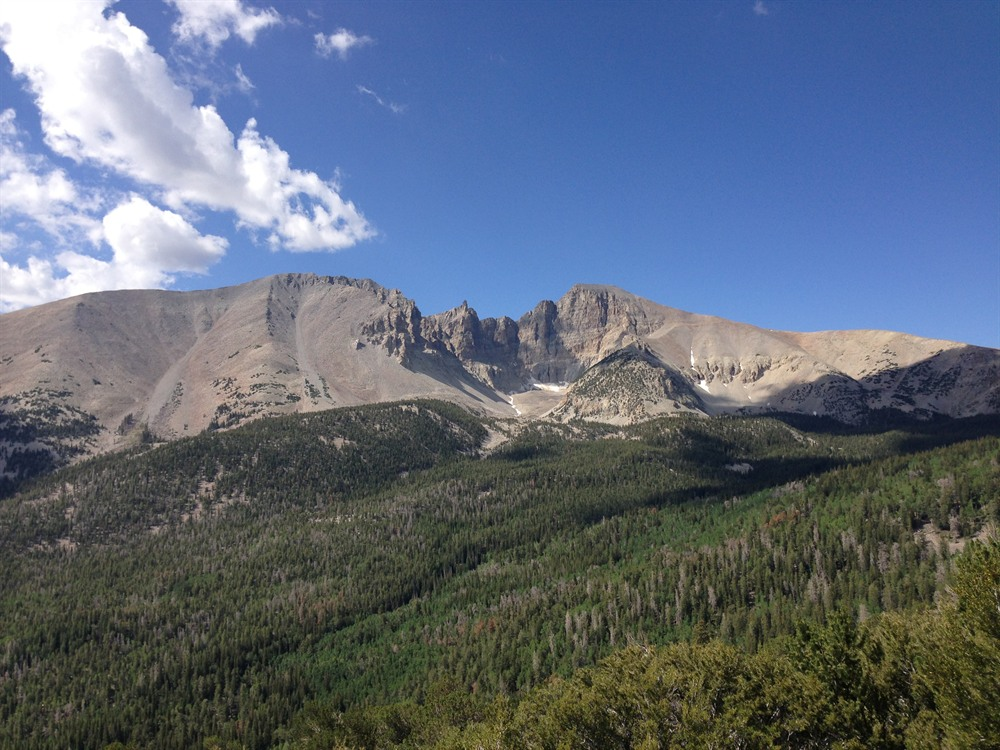
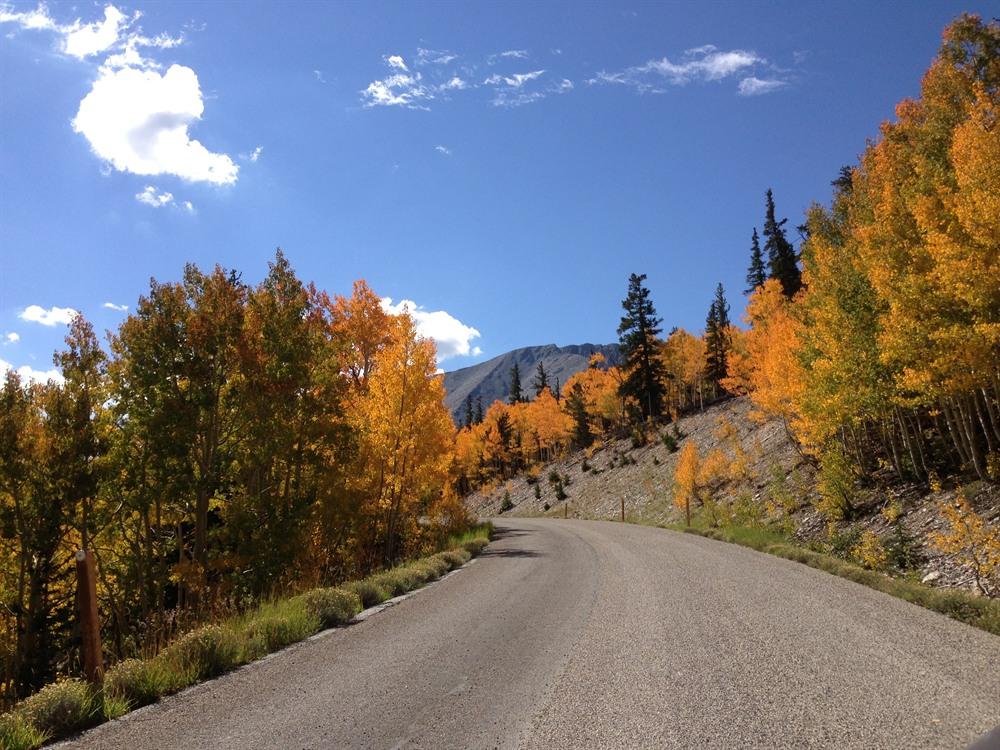
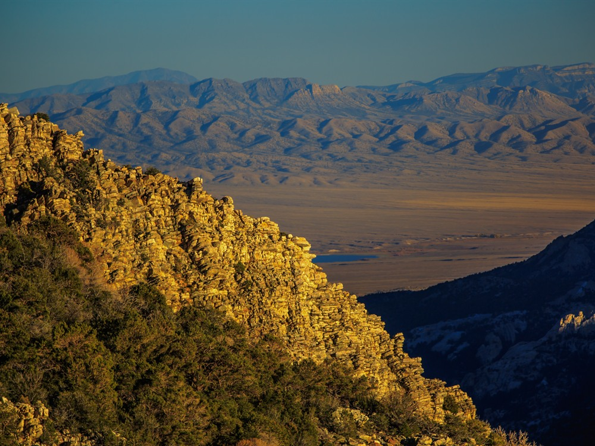

Scenic Drive takes visitors on a paved 12 mile, out and back road to an elevation exceeding 10,000 feet above sea level, to the face of Wheeler Peak
Pets are not permitted on trails or in the backcountry of the park, except leashed pets on the Lexington Arch Trail or the trail between Baker and the Great Basin Visitor Center.
Leashed pets can only be exercised in the campgrounds, in front of the visitor centers, and along roads.
Overview
A true mountain road, the scenic drive hugs the mountains of the South Snake Range, slowly winding visitors to a point above all others, where vistas reach the horizon, and one is met with a pristine view of the rugged, harsh, yet surprisingly beautiful Great Basin Desert.Driving into the Clouds
Starting at the Park boundary on Nevada Highway 488, the Wheeler Peak Scenic Drive takes visitors on a paved 12 mile, out and back road to an elevation exceeding 10,000 feet above sea level, to the face of Wheeler Peak. Along this 12 mile road, visitors will gain over 4,000 feet in elevation, and cross through numerous ecological zones, the equivalent of driving from Baker, Nevada, to the frozen Yukon, thousands of miles to the north. As visitors leave the Great Basin Desert, visitors will be amazed as to the diversity of life that lives just feet above the barren desert beneath. It is not uncommon to see mule deer, marmots, coyotes, jackrabbits, as visitors climb along the road.
Sagebrush Oceans
Starting the drive by the Lehman Caves Visitor Center, visitors are already at an elevation of 7,000 feet above sea level. Here visitors are driving through a typical Great Basin eco-region that is dominated by the low-lying sagebrush. Look closely, and visitors will see that it is not one, but multiple different species of sagebrush that cover the flats, all competing for valuable water and nutrients. If visitors are lucky enough to catch a summer rain shower, visitors will smell the sage filling the air.
As visitors leave the sagebrush, visitors will notice some drastic changes as the low shrubs are replaced by taller and taller pine trees. By 8,000 feet, visitors are passing through a prime example of a pristine Pinyon/Juniper woodland ecological zone. Look closely, and visitors will see subtle differences between these two common trees. Pinyon pines have sharp, round needles emerging singly from the tree stem, while juniper needles are very short and lay close together, giving the appearance of scales.
Ascending out of the pinyon/juniper ecological zone at around 8,500 feet above sea level, one begins to encounter some scrappy, rough looking trees, known as the Curleaf Mountain Mahogany. Look closely at their leaves, and visitors will discover small, waxy leaves that curl down at the edges, just as the name suggests. In late summer, visitors might see branches covered with delicate, fuzzy spirals as the trees prepare to release their seeds. The sign of human impact is noticeable in these parts, as large stands of mountain mahogany were cleared to support the early miners of the area.
By 9,000 feet, visitors have left the mountain mahogany , and entered a forest of mixed conifers. As visitors examine the forest, visitors will see groves of white fir, Douglas fir, and ponderosa pine. Telling these trees apart is as easy as looking at their needles. White fir has flat needles that arch upwards, Douglas fir has drooping branches with three terminal buds at the end, while ponderosa pine is the large tree with reddish bark and long needles. Visitors can stick their noses in the cracks in the bark of the ponderosa pine. visitors will smell a distinct smell that reminds some of vanilla, and others of butterscotch.
By the 11th mile, visitors have reached an altitude of 10,00 feet above sea level. Ecologically, visitors have entered a region more characteristic of a Rocky Mountain alpine forest than that of the Nevada desert. This sub-alpine forest is dominated by the white-barked aspen tree. Surprisingly, each aspen grove visitors see can be a single, living organism. Aspens reproduce through cloning by sending runners out underground that become new trees. Because of this, it is common that entire hillsides of aspens are all a single, genetically identical tree.
By the time visitors reach the Summit Trailhead, visitors have completed their journey from the harsh sagebrush flats to the surprisingly lush and diverse sub-alpine forests of the Snake Range. In just 12 miles, visitors have traveled through the same eco-regions that visitors would have encountered as if visitors drove from Baker, Nevada to the frozen Yukon, thousands of miles north.
As visitors travel along the road, take the time to stop at the many pullouts along the way. These paved parking areas highlight some of the important geological and historical highlights of the Great Basin region. Pullouts provide excellent viewing and photography opportunities for Mount Moriah, Lehman Creek, Wheeler Peak, Doso Doyabi Peak, and the Snake Valley below.
Use the Wheeler Peak Scenic drive to access the popular hiking trails to the Alpine Lakes, the bristlecone pine interpretive trail, the Osceola Ditch, and the Wheeler Peak Summit Trailhead.
This article uses material from nps.gov "Great Basin National Park"










.jpg){kind=link}